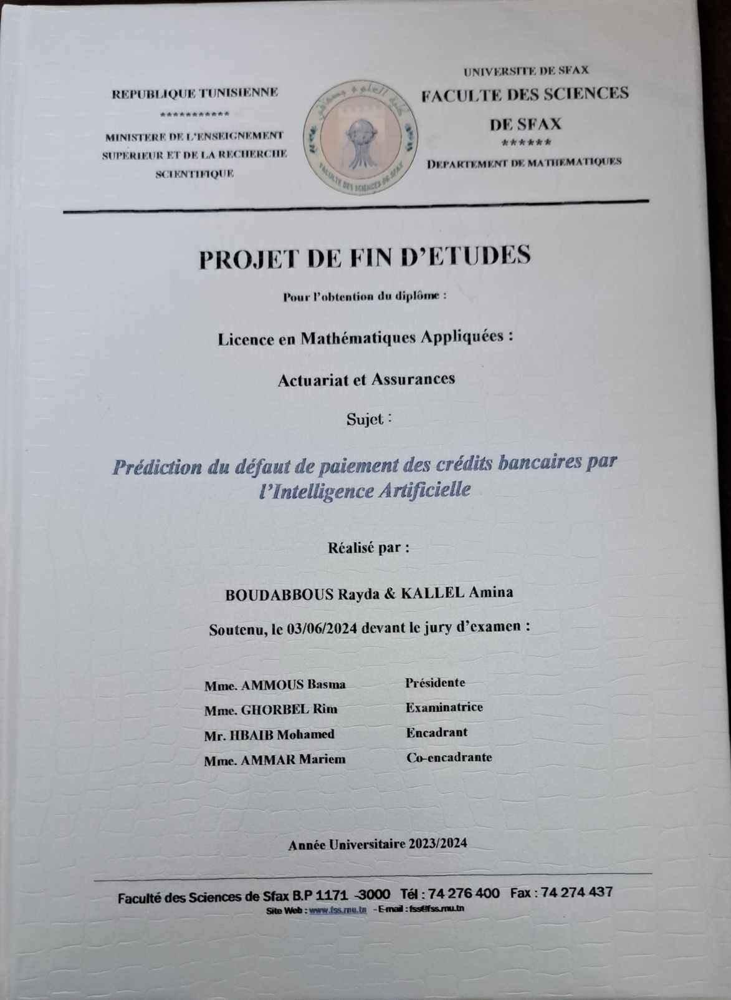

Matières et Projet PFE
Matières étudiées
- probabilité
- Python
- Analyse des données
Projet de Fin d'Études : Prédiction du défaut de paiement des crédits bancaires par l’Intelligence Artificielle

Ce projet consiste à développer un modèle d'intelligence artificielle capable de prédire le défaut de paiement des crédits bancaires. Le projet a été conçu pour identifier les facteurs à risque, anticiper les comportements de paiement, et permettre aux institutions bancaires d'optimiser leurs décisions de crédit.
Objectifs :
- Analyser des données historiques de clients pour identifier les comportements financiers.
- Créer un modèle d'apprentissage automatique pour prédire la probabilité de défaut.
- Optimiser les décisions bancaires grâce aux prédictions générées par le modèle.
Technologies utilisées : Python, Pandas, Matplotlib, Jupyter Notebook